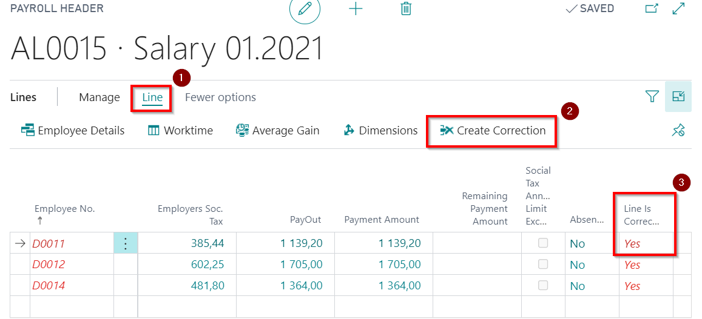

Correction lists
If it is necessary to adjust the calculation in the already booked / paid salary list, tax amounts, income amounts, payout amounts and others, then the correction functionality must be used. Because the correction can be made only when the previous calculation is canceled. All the created correction lists are compiled in a register Correction Headers. Correction List setup: previous salary list payment deduction component (usually payroll component No. 734), what need to be set in Payroll Setup's tab General field Next period Deduction Component.
We recommend to perform all absence corrections in the current month by correcting the previous salary list!
There are different types of possible corrections:
- All employees in the Salary List have the same error in the payroll calculation:
1) on the salary list toolbar click the buttons Actions ( ) - Create Correction Document (
) - Create Correction Document ( );
);
2) a line generation window will pop up, where you can set filters if necessary.
3) will be generated a correction list in which the whole calculation one to one is reversed. The list of cancellations must be posted!;
4) data correction should be performed and a new salary calculation must be prepared. The amount of the first payroll payments will be included in the next calculation as a deduction.
After posting the reversal, in the corrected salary list's tab Lines reversed entries will be marked with Yes ( ), that the line has a correction and the corresponding employee codes are highlighted in red (
), that the line has a correction and the corresponding employee codes are highlighted in red ( ). By clicking on a link Line Is Corrected (), a correction list will open in which the whole one-to-one calculation is canceled.
). By clicking on a link Line Is Corrected (), a correction list will open in which the whole one-to-one calculation is canceled.
- Error in calculation algorithm due to incorrect tax rate, amount of relief, etc.:
1) correct tax, relief, etc. rates;
2) creates a new salary list without reversing or correcting the previous salary list;
3) click the button Insert New Lines and enables the function Create correction line, if exist payroll for this month in the payroll lines generation window. If necessary, select the same filters as it was in the payroll to be corrected;
4) the system will prepare a list of corrections that need to be posted. The amount of the first salary list payments will be included in the next salary list calculations as a deduction.

- Error in calculating salary for one or more employees:
1) in the Lines tab of the Salary List, select the employee (or several) who needs a correction.
2) by clicking on the Line buttons () - Create Correction () the line is marked as corrected .
3) make corrections and prepare a new salary list, where the calculation is made only for the corrected employee (or several).

Tip
If the initial salary list was not paid before the corrective list was created (the payment has not been posted), the system will not allow the payments to be exported, because the next payroll will take into account the information about the payments at the time of cancellation.
In case the salary calculation has been reversed and a new salary calculation has not been created for this month, all entries for this month are opened for correction: in the component registers, the absence registers and hour registers.